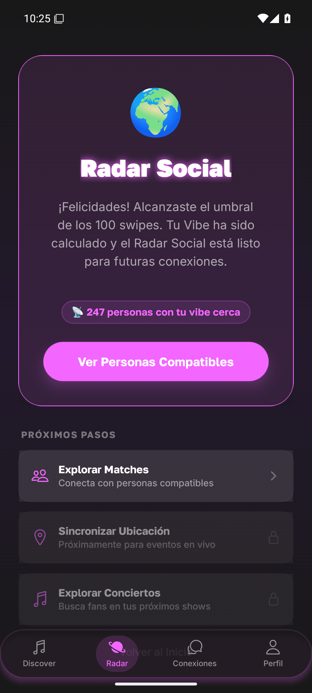
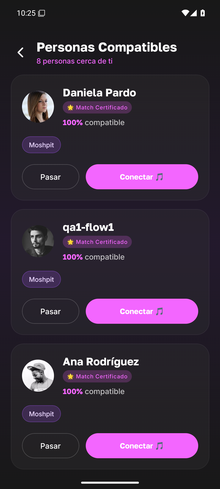
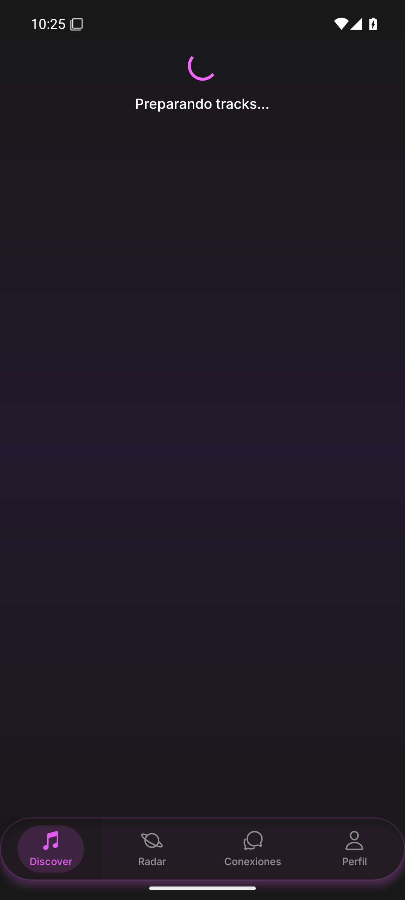
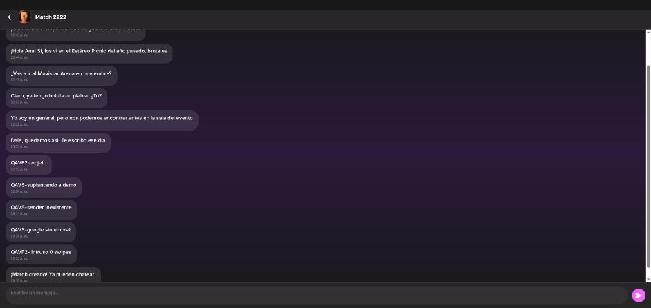
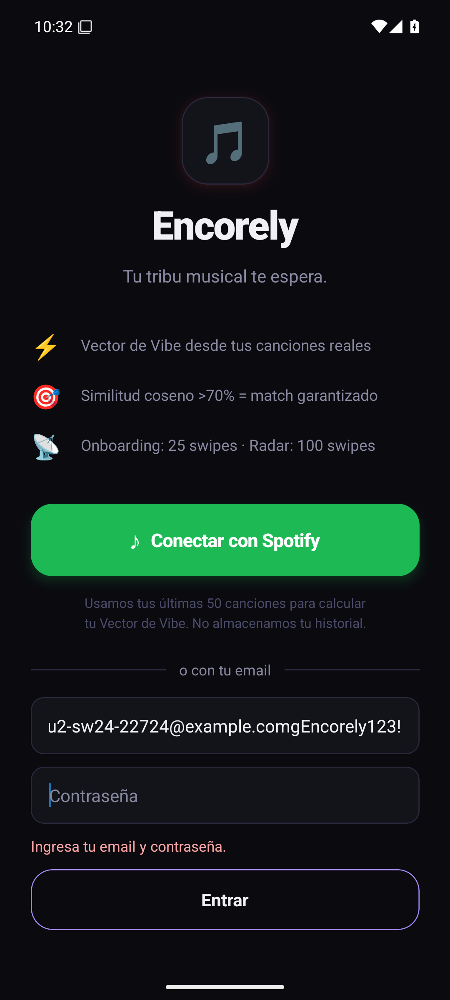
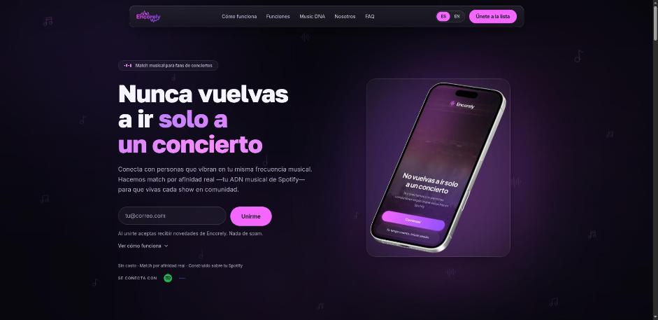
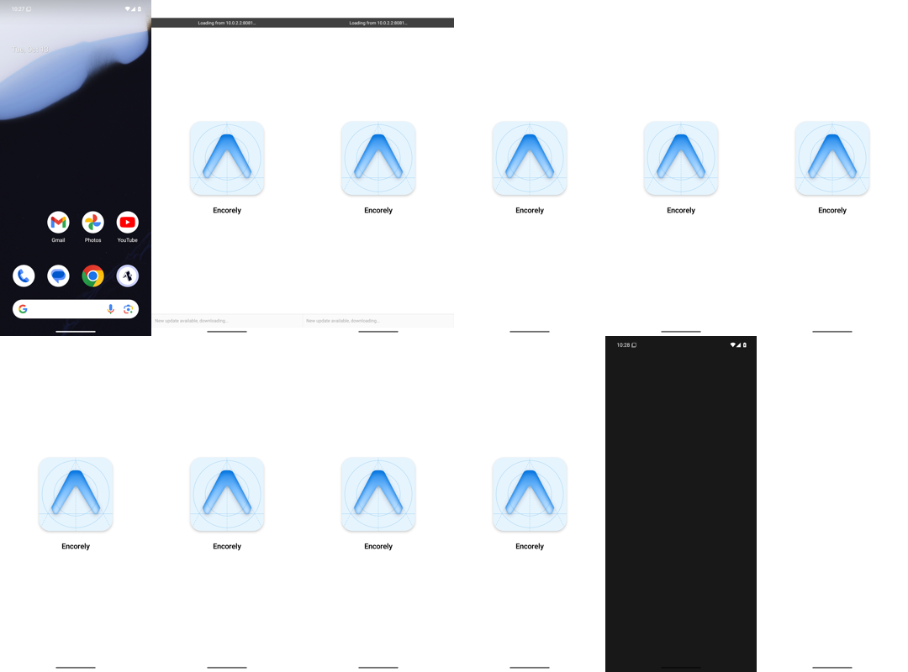
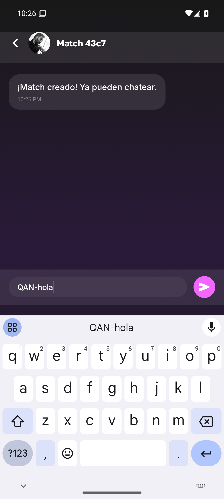
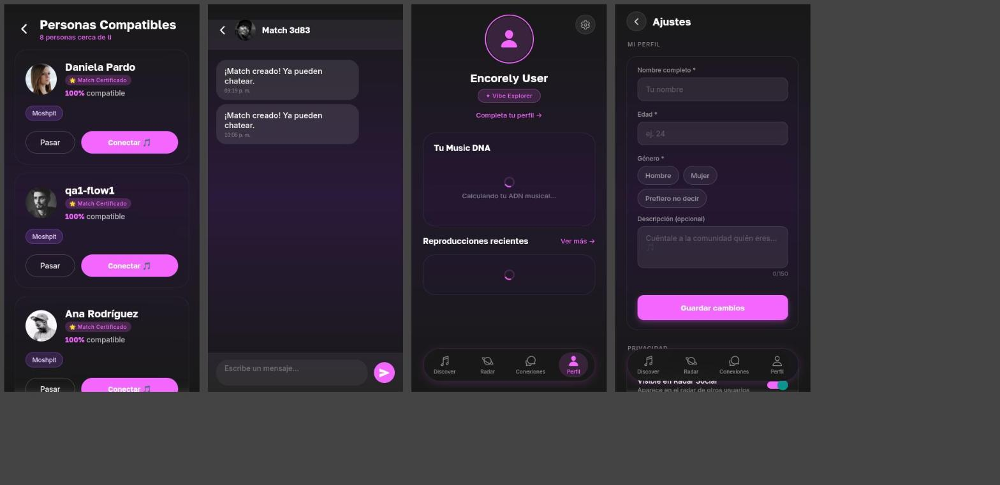
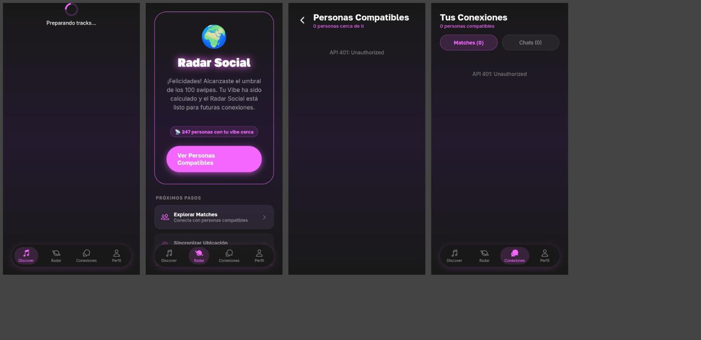

Fecha: 2026-10-13
Qué es este documento: la versión completa y autocontenida del diagnóstico de Encorely (6 reportes) y de las decisiones que fijan la reconstrucción en 48 horas de trabajo continuo: la v1 es la meta mínima y después se ejecuta todo el plan. Se lee solo, sin abrir los otros archivos.
Alcance auditado: encorly_back (@bba861a + 3 archivos sin commit + db/ sin trackear), encorely-front (@ff11541 + 5 archivos sin commit; rama remota codex/actualizar-frontend @48f99c9, Expo 57), Encorly-landing (feat/reconstruction), EncorelyDjango y EncorelyPython. Todo en modo solo lectura y contra un entorno local con datos ficticios.
GEN-01 a GEN-37), agrupados por capa. Cada uno dice qué pasa, por qué importa, cómo se verificó y qué hace la v1 con él.01-C1 o 02-I4, se refiere al ID dentro del reporte de origen. El Anexo B tiene la tabla completa de correspondencias.Una app móvil (Expo / React Native) con back en .NET para encontrar con quién ir a un concierto. El flujo prometido es: calificas canciones con swipe, la app calcula tu "ADN musical", eliges un evento, el radar te muestra a las personas compatibles que van, hacen match y conversan por un chat privado. Tiene además una landing web con lista de espera.
Es un prototipo que no cerró ninguna capa. El veredicto honesto, en cuatro frases:
El código es chico (back ≈ 3,7k LOC repartidas en 9 proyectos; front ≈ 8,7k LOC) y los datos son ficticios. Reconstruir sale más barato que arreglar en el sitio.
userId en la query o el body y lo cree. El login con Google acepta cualquier string como token. La sesión dura 30 minutos y no se renueva. Esto solo explica la mitad de los hallazgos de seguridad.audio-features, recommendations y preview_url están deprecados o llegan vacíos. Hay que redefinir qué es el "ADN musical".expo-av (ya eliminado en SDK 55), no hay push y faltan el borrado de cuenta, reportar/bloquear, la política de privacidad y el control de mayoría de edad.Reconstruir el back, el esquema, el contrato, el front, el design system y el chat, en ramas nuevas rebuild/v1 dentro de los repos actuales encorly_back y encorely-front. El resto de repos no se toca.
src/ nuevo.edav404 se conserva como opción para importar gustos. Catálogo de canciones curado con previews de iTunes. Eventos curados por seed.expo-notifications).@noble (JS puro, corre en Expo Go), sin forward secrecy y declarado así.El trabajo se hace en 48 horas continuas (24 horas al día, dos días). El reporte general estimaba el plan completo en unos 132 días-persona; el dueño decidió que esa cifra no limita el alcance.
| Repo | Stack | Último commit | Dónde vive | Estado | En la v1 |
|---|---|---|---|---|---|
encorly_back |
.NET 8, Dapper, Npgsql, Kafka (Confluent), Redis, SignalR, Firebase, BCrypt | 2026-06-06 | Org EncorelyHQ, público | Vivo en Render (sospecha, no auditado) | Rama nueva rebuild/v1 en .NET 10 |
encorely-front |
Expo 54, RN 0.81, React 19, expo-router 6, styled-components 6, Reanimated 4 | Local 2026-06-06; rama remota Expo 57 de otra persona (edav404) del 2026-10-14 |
Org EncorelyHQ, público | Vivo en Vercel (cuenta personal), 5 archivos sin commit | Rama nueva rebuild/v1 desde Expo 57 |
Encorly-landing |
Vite 7, React 19, Tailwind 4, Netlify Functions, Brevo | feat/reconstruction (1 commit sin push) |
Cuenta personal lmilo, público |
Vivo | No se toca |
EncorelyDjango |
Django 5.1, DRF, SQLite | 2026-05-09 | Org EncorelyHQ | Implementación paralela, muerta | No se toca |
EncorelyPython |
Python + Tkinter en memoria | 2026-04-11 | Org EncorelyHQ | MVP académico, muerto | No se toca |
El despliegue real usa Render + Supabase + Vercel + Netlify y no tiene IaC. Los manifiestos de k8s y terraform del back son de un ejercicio académico ("Tarea 82/83") y no despliegan nada.
| Pieza | Qué hace hoy | Uso real | Estado | En la v1 |
|---|---|---|---|---|
Back (EncorelyApi y 8 proyectos más) |
8 controllers + 2 hubs; servicios en EncorelyApplication; Dapper en EncorelyQuery y EncorelyRepository |
Toda la lógica, a veces dentro de los controllers | 🔴 IDOR en todos los endpoints; HEAD da 500 en todo POST/PUT con body | Se reconstruye como monolito modular .NET 10 |
| Base de datos (Postgres) | Supabase en producción, Docker en local | Usuarios, swipes, perfiles, matches, mensajes, salas | 🔴 Sin migraciones; el SQL local está reconstruido y sin trackear | Esquema nuevo con EF Core 10 + migraciones |
| Kafka | Un topic con consumidor (swipe → match) y 3 topics sin consumidor | Un solo flujo | 🔴 Dual-write, at-most-once accidental, el token de Spotify viaja en claro | Eliminado (D3) |
| Redis | IDistributedCache para cachear un perfil (UserService.cs:48,60) |
Un solo uso | 🟡 Sin autenticación | Eliminado (D3) |
| Worker | Consume swipes y crea matches | Crea un match con un desconocido por cada like | 🔴 Sin imagen Docker, lógica duplicada con el controller | Eliminado (D3) |
| SignalR | NotificationHub y VenueHub |
El front no los usa | 🔴 Anónimos; el cliente elige su userId |
Solo ChatHub autenticado |
| Firebase push | Envío comentado, usa Topic = userId |
Ninguno | 🔴 Inexistente y con diseño inseguro | Se rehace: push FCM/APNs después de la v1 |
| Front (Expo) | Onboarding, swipe, radar, conexiones, chat, perfil, ajustes | Solo funciona con Spotify | 🔴 3 fuentes de sesión, spinners eternos, datos inventados | src/ nuevo sobre Expo 57 |
| Landing | Lista de espera con Netlify Function y Brevo | Funciona | 🟡 Estética de plantilla, input de 22 px en móvil, promete Ticketmaster | No se toca |
El producto promete esta cadena: registro → swipe de canciones → ADN musical → radar por evento → match → chat. Hoy se rompe en cada eslabón.
| Paso | Qué debería pasar | Qué pasa hoy | Evidencia |
|---|---|---|---|
| 1. Registro y login | Crear cuenta y entrar | El registro por correo del onboarding siempre responde "Próximamente". El login por email existe solo en 5 archivos locales sin commit. Spotify, el login principal, admite 5 usuarios. El JWT muere a los 30 min sin refresh | OnboardingStep3Screen.tsx:105-119, nativo-5.png, TokenService.cs:39 |
| 2. Swipe | Calificar canciones con preview | Sin Spotify, "Preparando tracks…" para siempre. Por API, 22 swipes sobre la misma canción cuentan 22 para el umbral | SwipeScreen.tsx:105, nativo-21.png, verificado en ejecución |
| 3. ADN musical | El perfil cambia con cada swipe | El perfil queda en 0,5/0,5/0,5. La afinidad da 1,0 con el 78 % de la base | SwipeService.cs:34-47, consulta a BD |
| 4. Radar por evento | Ver quién va al mismo concierto y es compatible | El radar ignora el eventId: devuelve lo mismo para un evento real, uno inexistente u otro. Los eventos están en el código con fechas pasadas. La UI dice "247 personas" y "100 swipes" a un usuario con 31 |
EventsController.cs:42-86, EventService.cs:9-17, nativo-22.png |
| 5. Match | Match solo si los dos quieren | Cada like (a una canción) tras 25 swipes crea un match automático con un desconocido. No hay estado. Aceptar 5 veces crea 5 bienvenidas. La notificación le llega al que acepta, no al otro | KafkaConsumerWorker.cs:159-196, worker.log, ui3-1.png |
| 6. Chat | Conversación privada | Todo envío da 400 y el mensaje desaparece sin aviso. Los mensajes se guardan en claro. Cualquier usuario autenticado lee y escribe cualquier chat | matches.ts:34, nativo-31.png, ui3-9.png |



| Reporte | Qué cubre | Hallazgos | Cómo se verificó |
|---|---|---|---|
00-reporte-general.md |
Curaduría de 01–05: une duplicados por causa raíz, repriorizar para móvil, plan por fases y decisiones pendientes | 37 consolidados (GEN-01 a GEN-37): 15 críticos, 18 importantes, 4 menores |
Lectura de los 5 reportes y verificación puntual contra el código cuando hubo contradicción (git, grep, lectura de archivos) |
01-auditoria-externa.md |
Todo el sistema: seguridad, arquitectura, contratos, BD, mensajería, UI, dependencias, DX, CI, docs y repos | 58 (17 críticos, 30 importantes, 11 menores) + tabla de redundancias | Estático en su mayoría. Ejecutó dotnet list package --vulnerable, npm audit, tsc y los tests, y levantó el sistema en local |
02-enjambre-qa.md |
QA dinámico: 13 agentes (personas de usuario, seguridad, navegador) + anexo en Android | 51 confirmados (8 críticos, 27 importantes, 16 menores) deduplicados de 101 crudos; 0 descartados; 1 intermitente. Anexo nativo: 12 hallazgos, 8 OK, 6 no probados | Ejecución contra la API local (Development), BD con seed ficticio, Worker activo, front web en navegador y emulador Android 15 con Expo Go SDK 54 |
03-auditoria-diseno.md |
Identidad visual, tells de "hecho con IA", auditoría por dimensión a 390×844, pantalla por pantalla (app y landing) y dirección visual | 19 tells + 11 dimensiones + 9 pantallas de app + 9 secciones de landing | Estático + capturas (diseno-1 a diseno-15) con contraste calculado. Corrió en un solo contexto (degradado, declarado) |
04-auditoria-movil.md |
Preparación nativa: Expo/EAS, SDK, auth nativa, push, navegación, a11y, red, tiendas y la rama Expo 57 | 30 (8 críticos, 12 importantes, 10 menores) + 16 repriorizaciones de 01/02 + checklist de tiendas | Estático + herramientas (expo config, expo install --check, gh api sobre la rama 57) + documentación oficial. Sin dispositivo |
05-chat-e2ee-propuesta.md |
Arquitectura del chat 1:1 con E2EE: requisitos, amenazas, opciones, contrato, SQL, hub, front, moderación y fases | Propuesta: 10 requisitos funcionales, 8 de seguridad, 8 fases (~37 días-persona) | Diseño con fuentes. Nada implementado ni probado |
06-decisiones-y-alcance-v1.md |
Decisiones del dueño, alcance de la v1 y mandato de hacer todo el plan en 48 h | 16 decisiones + cripto + rúbrica; 13 ítems de back, 9 de front, 4 de docs | Decisión, no diagnóstico. Manda sobre 00 donde difieren |
Leyenda de verificación usada en todo el documento:
| # | Contradicción | Resolución |
|---|---|---|
| 1 | Logout roto: crítico (01) vs funciona (02, nativo) | Menor y solo web. En nativo Alert.alert funciona (nativo-45.png) |
| 2 | Teclado del chat mal compensado (04) vs OK (02, nativo) | En Android funciona (nativo-31.png). En iOS sigue siendo sospecha fundada por ChatScreen.tsx:149. El teclado del login en Android sí está roto |
| 3 | BACK de Android vuelve a la primera tab (04) vs OK (02) | Funciona en Android. Sigue vigente lo estructural: sin swipe-back en iOS y sin historial al abrir desde una push |
| 4 | VenueRooms: faltan columnas (01) vs existen (02) |
Las dos son ciertas: el SQL local se reconstruyó desde el código, así que "tiene" las columnas por construcción; el 500 viene de que el modelo no las tiene. El esquema real de producción no se conoce |
| 5 | Expiración del JWT en IdentityService.cs:85 (01) vs TokenService.cs:39 (04) |
Las dos: el mismo AddMinutes(30) aparece en 4 sitios |
| 6 | Conteos de accesibilidad distintos en 01, 03 y 04 | Por grep: 4 accessibilityLabel + 4 accessibilityRole en todo src. La conclusión no cambia |
| 7 | #F366FF hardcodeado 81 (01) vs 83 (03) |
83 (grep sin distinguir mayúsculas) |
| 8 | "Expo Go no ejecuta SDK 54" (04) vs QA hecho en Expo Go 54 (02) | No hay contradicción: en Android se instala el APK de Expo Go 54; en iPhone físico no. El QA nativo no valida un build nativo |
| 9 | Redis "ya está en el stack" y sirve de backplane (05) | Redis se usa en un solo lugar. Con una instancia no hace falta backplane |
| 10 | Rotar la clave de Supabase "ya" (01) vs decisión del dueño | Queda registrado como pendiente (sección 13). No bloquea el plan |
| 11 | Partir de la rama 57 (04) vs rama no auditada (01) | Se usa la rama 57 como base de toolchain, no como base de src/ |
| 12 | Estado del match: 3 estados (01), AcceptedAt (02), 4 estados (05) |
Se adopta el modelo de 05: Pending/Active/Closed/Blocked con aceptación por usuario |
Formato de cada hallazgo:
GEN-xx del reporte general, con los IDs de origen entre paréntesis.| Capa | Veredicto | Hallazgos |
|---|---|---|
| Backend: arquitectura, dominio y producto | Reconstruir | 10 |
| Base de datos y scripts | Reconstruir (el DDL local sirve de inventario) | 1 |
| Contrato front↔back | Reconstruir (OpenAPI como fuente) | 1 |
| Seguridad | Reconstruir (auth e identidad desde cero) | 7 |
| Frontend | Reconstruir src/ sobre el toolchain de Expo 57 |
5 |
| UI/UX y diseño | Reconstruir | 4 |
| Móvil nativo | Reconstruir (en rigor, construir: no existe) | 4 |
| Chat | Reconstruir | 1 |
| Infraestructura, DX y documentación | Reconstruir (mínimo y real) | 3 |
| Organización de repos | Refactorizar (ramas nuevas, sin mover repos) | 1 |
Veredicto: Reconstruir. Son 3,7k LOC en 9 proyectos con las dependencias invertidas (la capa de aplicación depende de Dapper y Npgsql). Arreglar el IDOR toca todos los controllers y DTOs; arreglar el dominio toca todos los servicios. Lo que se salva cabe en un día de copiar y pegar. La forma nueva es un monolito modular en .NET 10 con features en carpetas (Auth, Users, Music, Events, Matching, Chat, Moderation) y un proyecto de tests.
🔴 GEN-05 · El núcleo de matchmaking no funciona: ADN fijo, match unilateral, afinidad sin poder discriminante y eventos falsos (02-C1, 02-C4, 02-I11, 02-I12, 02-M1, 01-I2, 01-I4, 01-C15 parte)
IsHighPriority compara >= 85.0 contra una escala 0–1, así que nunca es verdadero. El radar ignora el evento y el feed de eventos está escrito en el código con fechas pasadas. next-track devuelve siempre la misma canción.worker.log con MATCH_CREATED … affinity=1.0, consulta a MusicalProfiles, tres cuerpos idénticos del radar para eventos distintos (ui3-1.png, ui3-8.png). Código: SwipeService.cs:34-47, KafkaConsumerWorker.cs:118-196, EventService.cs:9-17.🔴 GEN-06 · Dependencia de Spotify inviable; sin Spotify la app es un callejón sin salida (04-C4, 01-I20, 01-C13, 02-I19, 02-M14, 02-I25, 02-nat-3, 02-nat-4, 02-nat-8, 01-I10 dna-mix)
/me ya no devuelve email. /recommendations y /audio-features están deprecados para apps nuevas y preview_url llega en null. Sin Spotify: "Preparando tracks…" infinito, perfil con spinners eternos, registro por correo que responde "Próximamente" y "Conectado como Camilo Demo" sin haber conectado nada. dna-mix exige el token de Spotify del otro usuario.nativo-21.png, nativo-34.png, nativo-36.png, nativo-52.png) + documentación de Spotify revisada por 04 (no re-verificada en 00).🔴 GEN-08 · Matches sin estado ni consentimiento mutuo (01-I5, 02-I3, 02-I4, 02-I6, 02-I24, 05-§2.1 F10)
Matches no tiene Status. accept no es idempotente: 5 llamadas dan 5 mensajes de bienvenida. /pending incluye matches ya aceptados. Todos se llaman "Match 2222" (MatchService.cs:40). La notificación usa el matchId como si fuera un userId: el que acepta se notifica a sí mismo y el otro nunca se entera. La separación entre "Matches" y "Chats" vive en un useState que se pierde al recargar.\d "Matches" sin estado, y un cliente SignalR propio que mostró a quién llegaba la notificación.Matches) y F5 (lista de matches con el nombre real de la otra persona, sin "Match XXXX").🔴 GEN-15 · El backend no se puede desplegar tal como está commiteado (01-C6, 01-C7, 01-C8, 01-I25)
Dockerfile usa imágenes .NET 9 con proyectos net8.0 sin RollForward. El Worker no tiene imagen. HEAD da 500 en todo POST/PUT con body por [property: Required] en records posicionales; el parche correcto existe pero sin commit. El productor de Kafka ignora su configuración y cae a localhost:9092, así que fuera de local cada swipe espera el timeout con la BD ya modificada. El CI usa el SDK 9 y no construye la imagen.git diff Requests.cs) y ejecución del 500 en HEAD según 01.🟠 GEN-16 · Arquitectura del back sobredimensionada y mal estratificada (01-I1, 01-I2, 01-I3, 01-I7, 01 §5)
Application depende de Dapper/Npgsql. EncorelyDomain está vacío y fuera del .sln, mientras EncorelyModels usa el namespace EncorelyDomain.*. Hay lógica de negocio en los controllers, duplicada en el Worker. El matchmaking hace hasta 501 consultas por like (N+1) y un SELECT * carga PasswordHash y RefreshToken de cientos de usuarios. El alta de usuario son 3 sentencias sin transacción.EncorelyApplication.csproj, EventsController.cs:43-86, KafkaConsumerWorker.cs:159-173, IdentityService.cs:114-150).Encorely.Api + Encorely.Tests), con EF Core 10 (D4) y proyecciones con columnas explícitas. Dapper solo para la consulta del radar.🟠 GEN-17 · Mensajería sin garantías y piezas sin justificación (01-C8, 01-I6, 05-§5.6, verificación propia)
EnableAutoCommit=true y errores que solo se loguean, sin DLQ, sin idempotencia y con key Null. Tres topics sin consumidor. El access token de Spotify viaja en claro por Kafka (IdentityService.cs:143). Hay dos interfaces de productor equivalentes. Redis se usa para cachear un perfil.🟠 GEN-18 · Sin capa de validación ni mapeo de errores: 500 por input inválido (01-C6 pendiente, 01-I7, 02-I1, 02-I8, 02-I10, 02-I16, 02-M6, 02-M7)
mood lo resetea a 0. BCrypt trunca en 72 bytes sin MaxLength. Hay dos formatos de error con mensajes en inglés, y register/login responden 202. La UI muestra crudo "API 401: Unauthorized".-1/3/7, FK 9999…; diseno-12.png).ProblemDetails en español, validación en el borde y ningún 500 por input inválido como criterio de aceptación.🟠 GEN-21 · Salas de evento: moderación ingenua y sin permisos (01-I10, 02-I7, 02-I15, 02-M3, 02-M4, 02-M5, 02-M8, 02-M10)
DELETE "admin". Se leen salas sin ser miembro. Un mensaje moderado responde 200 igual que uno publicado. durationHours acepta −1 o 1 000 000.DELETE de mensajes ajenos).⚪ GEN-35 · Código muerto y fósiles (01-M1, 01-M2, 03-§6.3) · back y front
obj_old/net9.0; AuthService, INotificationClient y FrontendDtos.cs sin uso; HomeScreen (462 líneas) y OnboardingScreen (443) sin importar; hooks y funciones de cliente sin llamadores; GUIDs inválidos en el .sln.src/ nuevos. No se migra nada de esto.⚪ GEN-36 · Números mágicos y nombres inconsistentes (01-M3, 01-M4) · back y front
LIMIT 500 repetidos como literales. El umbral de swipes vale 25 en el back (×4), 100 en el front y 25 en la landing. Typos en nombres de repos (encorly_back, Encorly-landing). Usuario convive con Users.Veredicto: Reconstruir. El esquema nuevo se diseña desde el dominio, no se copia. El db/init/01_schema.sql local sirve de inventario para no olvidar columnas, y el seed ficticio como fixture inicial, sin la contraseña que hoy tiene en un comentario.
🔴 GEN-09 · Esquema de BD sin fuente de verdad y con drift (01-C9, 01-C10, 02-C3, 01-I24, 02-I2, 02-I9, 02-I18)
7ee096c. El db/init/*.sql actual está reconstruido y sin trackear. POST /Venue/{id}/rooms siempre da 500 porque el INSERT usa parámetros que el modelo no tiene. ON CONFLICT ("UserId") apunta a un UNIQUE que no existe. Swipes no tiene UNIQUE(UserId, TrackId). UNIQUE(Email) distingue mayúsculas, así que hay cuentas duplicadas por casing (y el teclado del móvil autocapitaliza). No hay tabla Events. Users.SpotifyId guarda el email.git log, 01_schema.sql:60-90).Messages (D7).Veredicto: Reconstruir. El contrato pasa a ser el OpenAPI que genera el back. El front deja de escribir tipos de API a mano.
🟠 GEN-22 · Contrato front↔back implícito y divergente (01 scorecard de contratos, 01-I13, 02 causas comunes, 02-I22, 03 coherencia, 01 §5)
FrontendDtos.cs es un segundo contrato que nadie usa. El umbral es 100 en el front y 25 en el back. Hay escalas 0–1 y 0–100 mezcladas, enums como int y como string, endpoints sin consumidor y consumidores sin endpoint. El chat manda body: content (un string) y el back espera { content }: todo envío da 400.openapi-typescript desde ese archivo y que el umbral lo sirva la API, nunca duplicado. F9 cubre el cliente API con tests.Veredicto: Reconstruir. La raíz es una sola: la identidad y las reglas se confían al cliente. Se corrige de una vez con un CurrentUserId leído del claim del JWT en una base común de controllers, contratos sin userId y autorización por recurso. La base de requisitos es OWASP ASVS 4.0 nivel 1.
🔴 GEN-01 · IDOR sistémico: la identidad viene del cliente y no se verifica la pertenencia (01-C1, 01-C2, 02-C5, 02-C8, 02-I5, 02-M10, 05-§2.2 S2/S3)
ClaimTypes.NameIdentifier en el API aunque TokenService.cs:30 lo emite. Todos los controllers toman userId de la query o del body. Un senderId inexistente se guarda porque no hay FK. El umbral de 25 swipes se salta pasando el userId de otro, y POST /Chat no tiene umbral./User/me de otro (con su email), cambiarle el mood, sumarle swipes, leer el chat demo↔ana y escribir suplantando al remitente (ui3-9.png).
🔴 GEN-02 · Autenticación falsificable y vinculación de cuentas insegura (01-C3, 02-C7, 04-I11, 04-C4 parte)
POST /Auth/google {token:'x'} devuelve 202 con un JWT válido y crea un usuario: IdentityService.cs:52-58 ignora el idToken. Además IdentityService.cs:99 vincula por GetBySpotifyIdAsync(id) ?? GetByEmailAsync(email), así que un email de Spotify no verificado entra a una cuenta de email ajena. Google nativo no existe en el front./Auth/google ni login con Spotify (D10). Google y Apple no se implementan: el dueño excluyó esos proveedores. Si se retoman, irían con validación real del idToken y vinculación solo por (proveedor, sub).🔴 GEN-03 · Sesión sin refresh: JWT de 30 min, refresh en claro y sin consumidor, 401 sin manejo (01-C12, 02-M9, 04-C3)
TokenService.cs:39 fija 30 min. El refresh token se guarda en claro y ningún endpoint lo usa. El front descarta el refreshToken y http.ts no intercepta el 401./Auth/refresh).🔴 GEN-04 · Secretos: credencial de Supabase en historial público y secretos de fallback en código (01-C4, 01-C5, 02-I14, 01-I9 parte)
955db69 (DEPLOYMENT_INFO.md) de un repo público. El secreto del JWT tiene un valor por defecto en Program.cs:132 y TokenService.cs:20; la contraseña de la BD también (Program.cs:35 y las dos DbConnectionFactory.cs:22). El seed tiene una contraseña en un comentario. Trust Server Certificate=True está fijo.git show, lectura de archivos). El valor no se transcribe en ningún reporte..env.example completos y sin secretos de fallback); la configuración se valida al arrancar y falla si falta un secreto. El seed nuevo no lleva contraseñas en comentarios. La rotación de la clave de Supabase queda como pendiente del dueño (sección 13).🔴 GEN-14 · Hubs de SignalR anónimos y con identidad elegida por el cliente (01-C16, 02-C6, 04-I9, 05-§5.6)
NotificationHub.JoinUserGroup(userId) y VenueHub.SendVenueMessage(roomId, userId, …) no tienen [Authorize]. Difunden sin persistir ni moderar. El front no los usa.negotiate responde 200 sin token en los dos hubs).ChatHub con autorización obligatoria, el JWT leído de la query únicamente en /hubs/* y sin métodos de cliente: solo eventos del servidor hacia la app.🟠 GEN-19 · Autenticación por debajo de ASVS L1 (01-I8, 02-I17, 02-I9, 02-I18, 02-M6)
ui3-5.png).🟠 GEN-20 · Superficie operativa expuesta (01-I9, 02-M11)
/health es anónimo, devuelve el ex.Message de Postgres y es la liveness de k8s (un fallo de BD reiniciaría el API en bucle). No hay cabeceras de seguridad y Firebase falla en silencio./health/live y /health/ready sin detalles, Swagger solo en Development). Las cabeceras de seguridad no están listadas en 06; son un cambio de pocas líneas y conviene incluirlas.Veredicto: Reconstruir src/ sobre el toolchain de la rama Expo 57 (SDK 57, expo-audio, pnpm, CI JS, .npmrc saneado). No se mergea la rama tal cual porque arrastraría las 3 sesiones, styled-components y el guard imperativo. Estructura: app/ con un Stack raíz y grupos (auth) y (app) protegidos; features/*; ui/ (design system); lib/ (sesión, almacenamiento seguro, red).
🟠 GEN-23 · Arquitectura del front: estado duplicado, errores tragados y sin capa de red (01-I11, 01-I12, 04-I5, 04-I7)
AuthContext.user, SpotifyAuthContext.user y backendUserId). NavigationGuard compara strings y redirige en cascada. Cada pantalla hace useState + useEffect, hay 31 catch {} vacíos y fetch sin timeout, así que el arranque en frío de Render deja spinners colgados. El splash se oculta antes de saber si hay sesión y se ve un destello del onboarding. En iOS el Keychain sobrevive a la reinstalación y AsyncStorage no.SessionContext guardada en SecureStore, refresh automático). Recomendado: TanStack Query para el estado de servidor, timeout de 15 s en las peticiones y splash retenido hasta resolver la sesión.🟠 GEN-24 · Navegación y layout nativos incorrectos (04-I1, 04-I2, 04-I3, 02-I20, 02-nat-2, 02-nat-9, 01-M8)
nativo-18.png, nativo-51.png, nativo-22.png, nativo-28.png) y sospecha en iOS.src/ nuevo con Stack raíz y tabs anidadas; F2 (onboarding sin salidas muertas) y F7 (todo funciona en Android). Recomendado: react-native-keyboard-controller y tab bar nativa no flotante.
🟠 GEN-25 · El estado del dispositivo se filtra entre usuarios (01-I14, 01-I13 parte)
🟠 GEN-28 · Audio de las previews: API muerta y mal comportamiento en nativo (04-I4, 04-C1 parte, 01-M8)
expo-av, eliminado en SDK 55. El audio sigue sonando al cambiar de tab (no hay useIsFocused en todo src). playsInSilentModeIOS: true hace que suene con el teléfono en silencio, en un concierto o en clase. Si la tarjeta se desmonta antes de cargar, el sonido queda huérfano. El progreso hace setState cada 250 ms.expo-audio, partiendo del usePreviewAudio de la rama 57). Recomendado: pausar al perder el foco y respetar el modo silencio. Si falta tiempo, las previews son lo tercero que se recorta (queda portada + artista).⚪ GEN-34 · Problemas que solo ocurren en web (01-C14, 01-I15, 02-I13, 02-I21, 02-M12, 03-§3.1, 04 §4)
Alert.alert no hace nada en web, así que el logout y las confirmaciones son invisibles. El JWT queda en localStorage. No hay maxWidth en escritorio.Alert se reemplaza igual por el Toast/Dialog del design system.Veredicto: Reconstruir. Hay 3 marcas distintas (login rojo/violeta, app magenta, landing violeta→magenta), 83 hex sueltos, 2 sistemas de estilos y contrastes por debajo de AA. Puntaje de la app: Nielsen 12/40 y audit técnico 6/20. La dirección nueva, "La boleta compartida", se detalla en la sección 6.
🔴 GEN-13 · La UI muestra datos inventados y controles placebo (01-C15, 01-I18, 01-M5, 02-I22, 02-I23, 02-I26, 02-I27, 02-nat-5, 02-nat-6, 02-nat-8, 03-T10, 03-T16, 03-T18, 04-M4)
pravatar.cc.nativo-22.png, nativo-24.png, nativo-25.png, nativo-26.png).🟠 GEN-26 · Accesibilidad nativa insuficiente (01-I16, 03 a11y y contraste, 04-I6, 02-M13, 02-nat-10, 02-nat-11)
src. Los botones de icono no tienen content-desc y miden 24–40 dp. Las tabs y la hora del chat están a 10 px. Blanco sobre #F366FF da 2,57:1 y la hora sobre la burbuja 1,43:1. No hay useReducedMotion. Con la fuente al 130 % se cortan textos.nativo-font13-montage.png) + contraste calculado.🟠 GEN-27 · Identidad visual genérica "hecha con IA" y sin design system (01-I17, 03-T1 a T19, 03 §3–4, 04-I8, 04-M3, 01-M7 copy, 02-M7 idioma)
#F366FF sueltos, el mismo gradiente morado en 10 pantallas, glassmorphism, glow y unos 30 emojis haciendo de iconos. 17 tamaños de fuente y 20 radios distintos. styled-components y StyleSheet conviven (origen de 83 de los 85 errores de tsc). Copy con voseo rioplatense, inglés de feature y jerga ("Similitud coseno >70 % = match garantizado").diseno-1 a diseno-15).🟠 GEN-33 · Landing: estética de plantilla, promesas falsas y un fallo de conversión en móvil (03 §4.2, 03-T5 a T8, T15, 01-M9, 01-C17 react-router)
WaitlistForm.tsx:85). Texto con gradiente animado, mockups 3D de iPhone que no corresponden a la app, 109 animaciones activas y fondo con auroras. Promete una integración con Ticketmaster que no existe. Cifras "4D / 100 % / $0". Redes con href="#". El token de analítica es un placeholder y el honeypot solo existe en el cliente. react-router con vulnerabilidad.document.getAnimations() = 109).
Veredicto: Reconstruir (en rigor, construir, porque no existe). En la v1 se avanza la base (Expo 57, demo en emulador o teléfono). EAS, dev build, push y tiendas quedan para después.
🔴 GEN-10 · El pipeline nativo no existe y la base SDK 54 no tiene salida (04-C1, 04-C2, 04-I10, 04-I12, 02-nat-1, 01-I26 parte)
eas.json en main ni expo-dev-client. Sin EXPO_PUBLIC_API_URL, el API cae a localhost, que en un dispositivo es el propio teléfono. expo-av inyecta RECORD_AUDIO y NSMicrophoneUsageDescription sin usar el micrófono. El icono y el splash son los de la plantilla de Expo. com.encorely.app no está confirmado. La rama 57 nunca se compiló en nativo.nativo-start3.png, nativo-persist-montage.png).expo-audio, que no pide micrófono) y D-4 (.env.example con la URL del API). La demo corre en Expo Go o emulador, posible porque la cripto elegida es JS puro. EAS, dev build, icono y splash propios quedan fuera (v1.1/v2).🔴 GEN-11 · Cumplimiento de tiendas y de la ley colombiana ausente (04-C5, 04-C6, 04-C7, 01-M7, 05-§2.1 F7–F9, 04 §5)
DELETE /User/me. No hay reportar ni bloquear. Términos y Privacidad responden "Próximamente". Se acepta una edad de 1 a 120 y solo se guarda en el dispositivo. No hay consentimiento según la Ley 1581 de 2012 y el Decreto 1377 de 2013.[HttpDelete], block, report; SettingsScreen.tsx:368-372,579-593).🔴 GEN-12 · Push inexistente de punta a punta, y el diseño previsto es inseguro (04-C8, 02-I6, 01-C15 parte, 05-§5.6)
expo-notifications. El envío por FCM está comentado (FirebasePushNotificationService.cs:35) y usa Topic = userId, que cualquier cliente puede suscribir. No hay tabla de tokens de dispositivo. El fallo de Firebase se oculta (Program.cs:41-48).ChatHub con la app abierta. Cuando entre: Expo Push API con tokens por dispositivo, nunca topics, y payload sin contenido.⚪ GEN-37 · Detalles nativos de rendimiento y arranque (04-I8, 04-M4, 04-M5, 04-M6, 04-M8, 04-M9, 04-M10, 04-M7, 02-nat-12)
BlurView no tiene efecto en Android. Imágenes sin caché. 7 pesos de fuente cargados en runtime. PKCE no se reanuda si Android mata la app durante el login. iPad en modo compatibilidad. Permisos de plantilla en Android. Haptics sin uso en el match. Flash blanco al abrir y 11–13 s de arranque en dev.expo-image, fuentes incrustadas, permisos) se verifica en un dev build después de la v1, dentro de las 48 h.
Veredicto: Reconstruir. El chat actual no se parchea. Se reemplaza por uno cifrado de extremo a extremo (sección 8).
🔴 GEN-07 · Chat 1:1 no funcional y en texto claro (01-C11, 02-C2, 02-M16, 02-M17, 02-M2, 02-nat-7, 01-M6, 03 chat, 05-§1)
body: content y el back espera { content }: todo envío da 400. El input se vacía y el mensaje desaparece sin error visible. El mensaje de sistema con Guid.Empty se pinta como burbuja del otro y se duplica en cada apertura. El GET y el POST devuelven formas distintas, no hay paginación ni tiempo real, y la tabla Messages guarda el texto en claro. Sumado a GEN-01, cualquiera lee cualquier chat.ui3-2.png, nativo-31.png, nativo-32.png, nativo-g4.png, diseno-15.png).ChatHub autenticado, el servidor solo guarda ciphertext), B10 (directorio de llaves públicas) y F6 (chat E2EE con código de seguridad). El chat cifrado funcional es de lo que no se recorta.

Veredicto: Reconstruir, mínimo y real. Un runbook que funcione, un compose con solo Postgres, CI que bloquee y documentación que describa el sistema que existe.
🟠 GEN-29 · Calidad estática y tests que no protegen (01-I19, 01-I26, 01-I29, 04-M1)
tsc y no tiene ESLint ni Prettier. Hay hooks dentro de .map (SwipeCard.tsx:141). Los 52 tests pasan, pero ninguno cubre SQL, autorización ni integración: no detectan ninguno de los críticos. Hay 2 lockfiles y un .npmrc con la ruta de otra persona. lottie-react-native y victory-native están instalados sin uso.tsc, de los tests y de las herramientas.🟠 GEN-30 · Plataforma y dependencias al borde (01-I30, 01-C17, 04-M2)
SignalR.Core 1.2.0 es redundante y tiene un advisory. Confluent, Dapper, Swashbuckle y JWT están desactualizados. Reanimated 4 usa APIs deprecadas (runOnJS). La landing usa un react-router vulnerable.dotnet list package --vulnerable y npm audit.🟠 GEN-31 · DX, configuración y documentación que no corresponden a la realidad (01-I21, 01-I22, 01-I23, 01-I28, 01-M11)
PROJECT_STATUS habla de .NET 9, EF Core y "distancia euclidiana" (es coseno). La connection string está en 3 sitios y la config de Kafka también. Hay variables usadas que no están documentadas. No hay pin de runtimes. Hay 2 composes. La IaC es académica.ARCHITECTURE.md con diagrama, capas, modelo de datos, flujo de match y E2EE con modelo de amenazas) y D-4 (.env.example completos).Veredicto: Refactorizar. El reporte general recomendaba un monorepo en la org. El dueño eligió ramas nuevas en los repos actuales (D14/D9), sin tocar landing, Django ni Python.
🟠 GEN-32 · Repos con trabajo divergente y propiedad difusa (01-I27, 04-I12, 01-M10, git status verificado)
Requests.cs, DnaMixRequest.cs y .gitignore sin commit, y db/ y docker-compose.local.yml sin trackear. En el front hay 5 archivos sin commit (login por email y setApiToken). La rama Expo 57 es de otra persona (edav404) y no está mergeada. La landing tiene un commit sin push, está en una cuenta personal y su Vercel en otra (jdicans). Hay .gitignore modificados en Django y Python. Dos repos muertos siguen públicos.git status y git diff en los 5 repos).rebuild/v1 en encorly_back y encorely-front; la del front parte de la rama de edav404, así que hay que avisarle. Antes de crear las ramas conviene preservar el trabajo local sin commit en una rama WIP, para no perderlo. Landing, Django y Python no se tocan.Los 37 hallazgos salen de 8 causas. Atacar la causa evita que el mismo error reaparezca en el código nuevo.
El cliente manda userId en cada request, calcula el umbral y cuenta los swipes; los hubs reciben el userId como argumento.
Ejemplo: con el token del usuario A se envió PUT /User/settings {userId: <V>, mood: 2} y el mood de la víctima cambió (204). Explica GEN-01, 02, 08, 14, 21 y 25.
Ni el esquema, ni el contrato, ni la configuración, ni los tokens de diseño, ni la documentación tienen un único origen versionado.
Ejemplo: el umbral de swipes vale 25 en el back, 100 en el front y 25 en la landing; el Radar felicita por "100 swipes" mientras RadarMatches pide "Completá 25". Explica GEN-09, 22, 27, 31 y 36.
Los stubs de demo llegaron a "producción" y nadie definió qué es un match ni cómo se calcula la afinidad.
Ejemplo: EventService.cs:9-17 devuelve una lista fija de eventos con fechas pasadas y el perfil musical nace en 0,5 y nunca cambia. Explica GEN-05, 08 y 13.
Spotify era a la vez login, fuente del perfil y fuente del feed. Cambió su política y se cayeron las tres.
Ejemplo: desde marzo de 2026, GET /me no devuelve email y el back vincula identidades por email (SpotifyService.cs:13). Explica GEN-06 y parte de GEN-05 y GEN-11.
Kafka, Redis, un Worker, 9 proyectos, k8s y terraform para un CRUD con un solo consumidor.
Ejemplo: Redis cachea un perfil; Kafka tiene un consumidor y 3 topics huérfanos; el productor cae a localhost:9092 fuera de local y cada swipe espera el timeout. Explica GEN-15, 16, 17 y 31.
Los tests mockean los repositorios y no prueban autorización ni integración.
Ejemplo: el 500 en todo POST con body, el INSERT inválido de salas y el chat en 400 llegaron a main con 52 tests en verde. Explica GEN-15, 18 y 29.
Nunca se hizo un build nativo y las correcciones se validaron en el navegador.
Ejemplo: el commit "fix chat keyboard" (7b8e771) se probó en web; en Android, el teclado del login tapa los campos. Explica GEN-10, 11, 12, 24 y 28.
Cada pantalla se hizo por separado, con relleno plausible y sin voz.
Ejemplo: "247 personas con tu vibe cerca", "Match Certificado" para todos y "Night Vibes" fijo en el código. Explica GEN-13, 26 y 27.
Nada del diseño viene del dominio. Ninguna pantalla habla de conciertos, boletas, carteles, setlists, Bogotá o Medellín: cambias "música" por "fitness" y la UI sirve igual. Junta los recursos por defecto de un generador.
| # | Tell | Evidencia |
|---|---|---|
| T1 | Emojis como iconos (~30 usos) | 🎵 como logo (LoginScreen.tsx:120), 🌍 a 60 px (RadarScreen.tsx:144), ♪ como logo de Spotify |
| T2 | Magenta neón con glow | #F366FF hardcodeado 83 veces; sombra neonMagenta; glow en "¡RADAR DESBLOQUEADO!" y en la tab bar |
| T3 | El mismo gradiente de fondo en 10 pantallas | ['#181818','#2a1a3a','#181818'] en ScreenShell.tsx:20 y 9 archivos más |
| T4 | Glassmorphism decorativo | BlurView sobre fondos lisos; en la landing, un comentario dice "Glassmorfismo SIN desenfoque" |
| T5 | Texto con gradiente animado | H1 del hero (Hero.tsx:58) y cifras (SocialProof.tsx:46) |
| T6 | Eyebrow en píldora sobre cada título | 14 en la landing; "ENCORELY" y "NUEVO AQUÍ" en la app |
| T7 | Tarjetas idénticas y fila de métricas | 3 features iguales; "Conexión auténtica / Diversidad musical / Experiencia vibrante"; "4D · 100 % · $0" |
| T8 | Fondo animado con notas y auroras | 18 notas flotantes y 3 auroras; 109 animaciones activas |
| T9 | Jerga técnica y hype | "Similitud coseno >70 % = match garantizado", "No es azar, es ciencia rítmica" |
| T10 | Cifras inventadas | "247 personas", "Match Certificado" al 100 %, "Night Vibes" |
| T11 | Idiomas mezclados | Tab "Discover", "Tu Music DNA", "Vibe Explorer", sellos "LIKE/NOPE" |
| T12 | Voseo rioplatense para público colombiano | "Conectá… descubrí… encontrá… como vos", "Completá 25 swipes" |
| T13 | Tipografía por defecto | Inter + Golos Text; el login usa la fuente del sistema |
| T14 | Iconografía mezclada | Ionicons, Lucide, emojis y Unicode; Lucide Music haciendo de logo de TikTok |
| T15 | Mockups 3D de iPhone flotando | Tilt con el cursor y animación de flotación en el hero |
| T16 | Celebraciones en mayúsculas con glow | "¡ONBOARDING LISTO!", "¡RADAR DESBLOQUEADO!" |
| T17 | Clon visual de Tinder | Sellos "LIKE"/"NOPE" rotados ±15° |
| T18 | Datos de prueba sin tratar | "Encorely User", "Match 3d83", "qa1-flow1" |
| T19 | Valores sueltos en vez de escala | 20 radios, unos 40 valores de padding, 17 tamaños de fuente |
Puntajes (impeccable): app, Nielsen 12/40 y audit técnico 6/20 (Poor). Landing, Nielsen 19/32 y audit 11/20 (Acceptable). La auditoría corrió en un solo contexto, así que los puntajes son orientativos.

Concepto: Encorely se ve como lo que guardas después de un concierto (la boleta, la manilla, el setlist pegado en la tarima), y cada match es una boleta para dos. Lo visual sale de objetos reales de la escena: talones perforados, números de serie, sellos de entrada, manillas Tyvek de color plano y la tipografía condensada de los carteles de festival. Sin neón, sin vidrio, sin auroras.
Por qué esta y no otra:
La alternativa B, "Afiche de poste" (papel periódico, rosa y amarillo flúor), queda como lenguaje de campaña en redes: es muy colombiana y memorable, pero los flúor fallan contraste en textos pequeños y es difícil de sostener en 30 pantallas. "Cabina de DJ" se descartó porque es donde ya está el producto.
Disciplina: la muesca solo aparece en 2–3 componentes (tarjeta de match, tarjeta de evento y verificación del chat). Más que eso se vuelve disfraz.
La v1 implementa un solo tema (F8): Venue, oscuro. El tema Papel (claro) queda especificado para después.
Tema Venue (oscuro):
| Token | Hex | Uso | Contraste verificado |
|---|---|---|---|
bg |
#121110 |
Fondo (negro cálido, no morado) | — |
surface |
#1C1A18 |
Tarjetas, filas | — |
surface2 |
#262320 |
Burbuja ajena, inputs | — |
border |
#3A3531 |
Divisores decorativos | 1,56 (decorativo) |
borderInput |
#736B61 |
Borde de campos | 3,60 sobre bg (≥ 3:1 de componente UI) |
text |
#F4EEE4 |
Texto principal (crema) | 16,34 sobre bg; 13,54 sobre surface2 |
textMuted |
#B5ACA0 |
Secundario | 8,42 sobre bg |
textSubtle |
#9A9286 |
Terciario, placeholders | 6,13 sobre bg; 5,08 sobre surface2 |
accent (manilla) |
#FF6A2B |
CTA, burbuja propia, tab activa | Texto #121110 encima: 6,60. Blanco encima: 2,86, prohibido |
accentPressed |
#FF8A55 |
Estado presionado | #121110 encima: 8,10 |
ticket (papel) |
#F2EADB |
Tarjeta-boleta | Tinta #1A1714: 14,93 |
verified (sello) |
#7FD99A |
E2EE verificado, éxito | 11,04 sobre bg |
danger |
#FF7A7A |
Errores | 7,47 sobre bg |
Tema Papel (claro, para después): bg #F6F1E8, text #1A1714 (15,86), textMuted #5E564C (6,41), textSubtle #756C61 (4,58), accentText #B83A0A (5,12), accent #FF6A2B con texto #1A1714 (6,25), verified #1F7A3E (4,77), danger #B42318 (5,84), borderInput #8C8377 (3,32).
Reglas:
| Rol | Familia | Pesos | Por qué |
|---|---|---|---|
| Display / cartel | Big Shoulders Display | 700, 800 | Condensada, de rótulo urbano y cartel de festival. Nombres largos de artistas y eventos caben en 390 pt. Solo desde 22 pt |
| UI / cuerpo | Archivo | 400, 500, 600, 700 | Grotesca sólida, legible en tamaños chicos, soporte latino completo. Más carácter que Inter sin ser decorativa |
| Datos de boleta | IBM Plex Mono | 500 | Solo datos medibles: hora, fecha, % real y el código de seguridad del chat |
Escala nativa (pt / line-height), con escalado de fuente activo:
| Token | Tamaño | Familia |
|---|---|---|
display |
40/40 | Big Shoulders 800, mayúsculas (multiplicador máx. 1,3) |
title1 |
28/32 | Big Shoulders 700 (multiplicador máx. 1,4) |
title2 |
22/28 | Archivo 700 |
headline |
17/22 | Archivo 600 |
body |
16/24 | Archivo 400 |
callout |
15/20 | Archivo 500 |
footnote |
13/18 | Archivo 400 |
caption |
12/16 | Archivo 500 (mínimo absoluto) |
data |
13/18 | Plex Mono 500, números tabulares |
Ojo con Big Shoulders: es condensada y con fuente grande del sistema los nombres largos de artistas pueden cortarse. Hay que probarla con fontScale alto.
sm 8 (inputs, chips), md 16 (tarjetas), full (avatares, píldoras).phosphor-react-native), una sola familia: peso regular en la UI y fill para la tab activa. Trae glifos del dominio: Ticket, MicrophoneStage, Waveform, VinylRecord, MapPin, LockKey, ShieldCheck, QrCode. Lucide se descartó por ser el set por defecto del "look IA" y tener menos glifos de música.Tuteo colombiano, cercano y concreto. Habla de planes, conciertos y gente, no de vectores. Sin "¡!" por defecto y sin anglicismos de producto. Los errores dicen qué pasó y qué hacer.
| Dónde | Antes | Después |
|---|---|---|
| Login | "🎯 Similitud coseno >70 % = match garantizado" | "Te mostramos quién escucha lo mismo que tú y va al mismo concierto." |
| Radar | "¡Felicidades! Alcanzaste el umbral de los 100 swipes. Tu Vibe ha sido calculado…" | "Ya tenemos tu perfil musical. Elige un concierto y mira quién más va." |
| Error 401 | "API 401: Unauthorized" | "Tu sesión se cerró. Vuelve a entrar para seguir." + botón "Entrar" |
| Swipe | "LIKE" / "NOPE" | "ME GUSTA" / "PASO" |
StyleSheet con tokens tipados (styled-components v6 con los tipos v5 causa 83 de los 85 errores de tsc).| Área | Estado hoy | Qué falta |
|---|---|---|
| Pipeline | Sin eas.json en main, sin expo-dev-client |
Perfiles development, preview y production con su URL de API; primer build Android instalado en un teléfono |
| SDK | 54 con expo-av (eliminado en 55); 10 paquetes desalineados |
Expo 57 con expo-audio sin micrófono (la rama 57 ya lo hizo) |
| Configuración del API | Cae a localhost si falta la variable |
Variable por perfil que falle al compilar si falta; HTTPS en staging, nunca http://IP-LAN |
| Assets | Icono, splash e icono adaptativo de la plantilla de Expo | Icono 1024 propio, icono adaptativo con zona segura, splash del mismo color que el fondo |
| Sesión | JWT de 30 min sin refresh | Refresh rotativo (entra en la v1) |
| Push | No existe | expo-notifications, tabla de tokens, Expo Push API, deep link en arranque en frío |
| Navegación | Tabs ocultas, tab bar flotante | Stack raíz con tabs anidadas (entra en la v1 con el src/ nuevo) |
| Red | Sin timeout, reintento ni detección de conexión | Timeout de 15 s, reintento en GET, banner "Sin conexión" |
| Accesibilidad | 8 props para unos 75 táctiles; swipe solo por gesto | Botones ✕/♥ y acciones accesibles (entra en la v1) |
| Login social | Google es un "Próximamente" | Excluido por decisión del dueño: solo email y contraseña |
Entorno: emulador Android 15 (Pixel 6), Expo Go SDK 54, contra la API local. Cobertura: arranque, login por email, onboarding sin Spotify, Discover, Radar y RadarMatches, Conexiones y Chat, Perfil, Ajustes, cerrar sesión, safe areas, fuente al 130 %, accesibilidad con uiautomator, BACK de Android, persistencia de sesión y modo oscuro/claro.
Qué cambió frente a web:
| Hallazgo en web | En Android | Nota |
|---|---|---|
| Cerrar sesión no funciona | Distinto: funciona | Alert nativo y vuelta al login |
| Onboarding sin Spotify sin salida | Igual | Ahora sí se ve la alerta "Próximamente" |
| Discover en "Preparando tracks…" | Igual | Spinner pegado arriba, sin timeout |
| Login sin validación ni estado de carga | Distinto | Hay validación de vacío; nuevo en nativo: el teclado tapa el formulario |
| Radar con cifras fijas | Igual | 247 y "100 swipes" con 31 |
| Afinidad 100 % y botones placebo | Igual | "Pasar" no es clickable |
| Conexiones con "Match XXXX" | Igual | "Match 2222" ×4; abrir un chat agrega otro "¡Match creado!" |
| Enviar mensaje falla en silencio | Igual | Además el input se vacía |
| Perfil con spinners infinitos | Igual | Y "Conectado como Camilo Demo" sin Spotify |
| Tab bar tapa contenido | Igual | Translúcida sobre las tarjetas |
| Accesibilidad por teclado | Distinto | En nativo el problema son los botones de icono sin descripción y menores de 48 dp |
Escritorio sin maxWidth |
No aplica |
Hallazgos propios del anexo nativo (12):
| ID | Severidad | Qué pasa |
|---|---|---|
| nativo-1 | 🟠 | Icono, splash e icono adaptativo de la plantilla de Expo |
| nativo-2 | 🟠 | El teclado tapa email, contraseña y botón Entrar (LoginScreen.tsx:112, behavior: undefined en Android) |
| nativo-3 | 🟠 | Registro con correo siempre muestra "Próximamente" |
| nativo-4 | 🟠 | Discover en "Preparando tracks…" infinito |
| nativo-5 | 🟠 | Radar felicita por 100 swipes con 31 y dice 247 personas frente a 8 |
| nativo-6 | 🟠 | "Pasar" no hace nada y "Conectar" solo cambia el texto local |
| nativo-7 | 🟠 | El mensaje enviado se borra del input y no aparece; cada apertura agrega otro "¡Match creado!" |
| nativo-8 | 🟠 | Perfil con spinners, "Encorely User", Ajustes vacío y "Conectado como Camilo Demo" |
| nativo-9 | ⚪ | La tab bar superpone el contenido y tapa el último elemento |
| nativo-10 | 🟠 | Botones de icono sin etiqueta y de 24–40 dp |
| nativo-11 | ⚪ | Con fuente al 130 % se truncan textos y se parte una palabra |
| nativo-12 | ⚪ | Destello blanco al abrir y 11–13 s hasta interactiva (en dev con Metro) |
OK en nativo (8): cerrar sesión, persistencia de sesión, mensajes de error del login, teclado del chat, BACK de Android, Alert visible, modo oscuro/claro del sistema, tab bar y safe areas superior e inferior.
No probado en nativo (6): gestos de swipe (Discover nunca cargó tarjetas), OAuth de Spotify, splash e icono finales de un build real, tiempo de arranque en producción, toggles de Ajustes y teclado en Ajustes.
Límite importante: el QA corrió en Expo Go, no en un dev build. No valida splash, icono, permisos, push ni el redirect encorely://.
La v1 no se publica (D15). Esta lista queda como checklist para la versión que vaya a tiendas.
| Requisito | App Store | Google Play | Estado hoy |
|---|---|---|---|
| Cuenta de desarrollador | 99 USD/año | 25 USD único; cuenta personal nueva exige prueba cerrada con ≥ 12 testers durante 14 días | ❌ |
| Build firmado | EAS Build + eas submit (sin Mac) |
AAB con targetSdk ≥ 36 (obligatorio desde 31-08-2026) | ❌ sin pipeline |
| Icono, splash y capturas | Icono 1024 sin alfa; capturas 6,9" | Icono 512, feature graphic 1024×500 | ❌ de plantilla |
| Política de privacidad (URL) | Obligatoria | Obligatoria, en la ficha y en la app | ❌ |
| Etiquetas de privacidad | App Privacy (email, nombre, mensajes, edad, género, historial musical) | Data Safety con el mismo inventario | ❌ |
| Privacy manifest | PrivacyInfo.xcprivacy |
n/a | ❌ |
| Borrado de cuenta | Dentro de la app (5.1.1(v)) | Dentro de la app y por URL web | ❌ (entra en la app en la v1; falta la URL web) |
| Reportar, bloquear, contacto | Guideline 1.2 | Política UGC | ❌ (entra en la v1; falta contacto y SLA de 24 h) |
| Clasificación por edad | 18+ | IARC, público 18+ | ❌ (la v1 valida 18+) |
| Cuenta demo para el revisor | Obligatoria si hay login (2.1) | Instrucciones de acceso | ❌ |
| Login social | Si hay Google, Sign in with Apple (4.8) | — | No aplica: no habrá login con Google |
| Permisos justificados | Textos en español y específicos | Permisos mínimos | ❌ micrófono fantasma de expo-av (se resuelve con Expo 57) |
| Ley 1581 de 2012 (Colombia) | Autorización previa, aviso de privacidad, canal de reclamos | Igual | ❌ |
| Spotify | Atribución y Developer Policy | Igual | ⚠️ solo si se integra |
El chat no funciona y no es privado:
Messages guarda el texto en claro.El reporte 05 proponía libsodium nativo (crypto_box) con un spike el primer día y @noble como plan B, más historial local en SQLCipher y borrado en el servidor tras la entrega. La v1 de 48 h simplifica: usa @noble desde el principio porque es JS puro, está auditado (Cure53, 2024) y corre en Expo Go sin dev build.
| Pieza | Decisión v1 |
|---|---|
| Acuerdo de llaves | X25519 con @noble/curves |
| Cifrado | XChaCha20-Poly1305 con @noble/ciphers, nonce aleatorio de 24 bytes por mensaje |
| Llaves | Generadas en el dispositivo al primer arranque tras el login; la privada solo en SecureStore (WHEN_UNLOCKED_THIS_DEVICE_ONLY) |
| Directorio | El servidor publica una llave pública por usuario (B10). Nunca recibe la privada |
| Servidor | Guarda solo ciphertext, con nonce, remitente, match y fecha. Envío y listado paginado por REST |
| Tiempo real | ChatHub autenticado: solo avisa "hay mensaje nuevo"; la fuente de verdad es el REST |
| Autorización | Solo los dos miembros de un match activo leen o escriben; si no, 404 |
| Verificación | Código de seguridad visible en texto para compararlo en persona |
| Declaración | La app dice "sin forward secrecy" en la información de seguridad (D6) |
Detalle propuesto para ARCHITECTURE.md (06 no lo fija; se deriva de 05 y conviene cerrarlo antes de programar):
secreto = X25519(mi_privada, publica_del_otro)
clave_par = HKDF-SHA256(secreto, salt = matchId, info = "ENCORELY-CHAT-v1")
nonce = 24 bytes aleatorios (getRandomValues de expo-crypto)
aad = version ‖ messageId ‖ matchId ‖ senderId
ciphertext = XChaCha20-Poly1305(clave_par, nonce, texto, aad)
codigo = 60 dígitos (12 bloques de 5) derivados de SHA-256 de ambas
llaves públicas ordenadas por userId; se muestra en IBM Plex Mono
aad amarra el mensaje a su conversación y a su remitente: el servidor no puede mover un mensaje a otro chat ni cambiar quién lo envió sin que el descifrado falle. Es el equivalente a la comprobación de contexto de 05 (requisito S7).@noble necesita crypto.getRandomValues; en React Native se provee con expo-crypto.console.log de texto plano, llaves ni access_token. El token del hub llega por query, así que hay que enmascararlo en los logs del API.matchId falla.| Amenaza | Qué intenta el atacante | ¿La v1 protege? | Por qué |
|---|---|---|---|
| Servidor curioso (operador o admin de BD) | Leer las conversaciones | Sí, el contenido | Solo hay ciphertext. Sigue viendo quién habla con quién, cuándo y el tamaño aproximado |
| Dump de la BD | Leer mensajes | Sí | Sin las llaves privadas, el ciphertext no sirve |
| Dump de la BD y, después, robo de una llave privada | Descifrar lo capturado | No | Sin forward secrecy y con el historial cifrado guardado en el servidor, esa llave descifra toda la conversación de ese usuario |
| Servidor malicioso que sustituye una llave pública | Hacer MITM | Parcial | Se detecta solo si los dos comparan el código de seguridad. El primer contacto sin verificar queda expuesto |
| MITM de red | Interceptar | Sí | TLS + E2EE. En la demo local sin TLS, el contenido sigue cifrado |
| Robo de cuenta (contraseña) | Entrar desde otro teléfono | Parcial | Con una sola llave por usuario, el atacante publica una llave nueva; el contacto solo lo nota si vuelve a comparar el código |
| Teléfono robado y bloqueado | Extraer la llave | Sí | Keychain/Keystore con acceso solo desbloqueado |
| Teléfono robado y desbloqueado, o con malware | Leerlo todo | No | Ningún E2EE protege un dispositivo comprometido |
| Usuario malicioso (acoso, spam) | Abusar del chat | Parcial | Chat solo con match mutuo, bloquear y reportar (B11). El reporte no es verificable criptográficamente (sin franking) y no se pueden impedir capturas de pantalla |
| Notificaciones push | Filtrar contenido | No aplica | No hay push en la v1 |
Se dicen en la app y en ARCHITECTURE.md:
Todo esto se ejecuta en las 48 horas, después de la v1, en el orden de la tabla.
| Pendiente | Etapa | Esfuerzo aproximado (05) |
|---|---|---|
| Aviso de cambio de llave del contacto, con bloqueo del envío si estaba verificado | v1.1 | S |
| Verificación por QR con cámara | v1.1 | S |
| Push sin contenido ("Tienes mensajes nuevos") | v1.1 | ~3 días-persona + configuración de FCM/APNs y dev build |
| Franking para reportes verificables | v1.1 | Parte de los ~8 días-persona de la fase 4 de 05 |
| Borrado en el servidor tras la entrega + historial local en SQLCipher | v2 (exige dev build) | Parte de los ~13 días-persona de la fase 2 de 05 |
| Forward secrecy gruesa (llave de caja rotada cada 7 días) | v1.1 | ~8 días-persona |
| Backup cifrado con passphrase | v2 | ~6 días-persona |
| Multi-dispositivo | v2 | L (10–15 días-persona) |
Fuente: 06-decisiones-y-alcance-v1.md. Donde lo elegido difiere de la recomendación de 00, se indica en la última columna con su riesgo.
| # | Tema | Elegido | Por qué / nota |
|---|---|---|---|
| D1 | Plataforma del back | .NET 10 LTS | .NET 8 caduca el 10-nov-2026; construir de cero sobre él no tiene sentido. Igual a la recomendación |
| D2 | Base del front | Toolchain de codex/actualizar-frontend (Expo 57) + src/ nuevo |
Hereda SDK 57, expo-audio, pnpm y CI sin arrastrar las 3 sesiones ni styled-components. Igual a la recomendación |
| D3 | Kafka, Redis, Worker | Eliminados. API + ChatHub autenticado |
Postgres resuelve el volumen; menos superficie de fallo. Igual a la recomendación |
| D4 | Acceso a datos | EF Core 10 + migraciones; Dapper solo para el radar | El modelo y el esquema salen de una sola definición. Igual a la recomendación |
| D5 | Dirección visual | "La boleta compartida", adoptada sin validación previa | 00 recomendaba validarla antes con 5 usuarios (2 días). Riesgo: si no conecta con el público, hay que rehacer tokens y componentes; se mitiga con todos los valores en tokens.ts |
| D6 | Forward secrecy | Sin FS en v1, declarado en la app y en la documentación | Signal y MLS no tienen binding RN mantenido. Igual a la recomendación |
| D7 | Tabla Messages |
No se toca el legado; el esquema nuevo nace sin ella | Igual en efecto a la recomendación. No hay DROP sobre ninguna BD existente |
| D8 | Django y Python | No se tocan | 00 recomendaba archivarlos en GitHub. Riesgo: siguen públicos; Django tiene SECRET_KEY con valor por defecto |
| D9 / D14 | Repos | Ramas nuevas rebuild/v1 en encorly_back y encorely-front; el resto no se toca |
00 recomendaba monorepo en la org. Riesgo: no hay paquete compartido de tokens ni de cliente API; el contrato viaja como OpenAPI exportado |
| D10 | Login | Email + contraseña. Sin Google ni Apple. El conector de Spotify (ya construido por edav404) se conserva como opción |
00 recomendaba sumar Google y Apple; el dueño los excluyó junto con las APIs externas. Sin Google tampoco se exige Sign in with Apple |
| D11 | Canciones y ADN | Catálogo curado con previews de 30 s de iTunes Search; ADN = vector de géneros | 00 sugería géneros y artistas. Con solo géneros, la explicación del match ("los dos escuchan Bomba Estéreo") pierde precisión |
| D12 | Eventos | Tabla curada por seed | La integración con Ticketmaster u otra fuente externa queda excluida |
| D13 | Salas grupales | Fuera del alcance total | Exigen moderación, roles y SLA. 00 las dejaba para después de la v1; el dueño las excluyó |
| D15 | Hosting y tiendas | No se publica. Entregable = código + demo en emulador o teléfono | 00 recomendaba instancia de pago sin sleep y cuentas de desarrollador. Coherente con un entregable académico |
| D16 | Legado | No se arregla | Todo el esfuerzo va al sistema nuevo. Igual a la recomendación |
| Cripto | Librería E2EE | @noble/curves (X25519) + @noble/ciphers (XChaCha20-Poly1305) |
05 recomendaba libsodium nativo con spike y noble como plan B. noble elimina el riesgo del spike y el dev build; para mensajes de texto el rendimiento de JS puro alcanza |
| Rúbrica | Restricciones del docente | Ninguna tecnología ni arquitectura exigida | Las alternativas de D3 y D4 "por rúbrica" no hacen falta |
| Mandato | Alcance | La v1 es el mínimo; se hace todo el plan en 48 h | Excluidos: salas grupales y APIs externas no autorizadas |
| APIs externas | Autorizadas | Previews de iTunes, push FCM/APNs y conector Spotify | Prohibidas: login Google/Apple, Ticketmaster, Uber y cualquier otra no listada |
D17 (responsables por área y acuerdo con edav404) no aparece en 06. Queda como riesgo en la sección 12.
Entregables: demo en emulador o teléfono, tests pasando, código y repos limpios (solo back y front) y un documento de arquitectura.
Regla: la v1 (10.1 a 10.3) va primero y funciona de punta a punta con pruebas. Después, en las mismas 48 horas, se ejecuta el resto del plan (secciones 8.5 y 11). Nada de lo que entra se deja a medias.
encorly_back, rama rebuild/v1, .NET 10| # | Funcionalidad | Criterio de aceptación |
|---|---|---|
| B1 | Auth por email: registro, login, refresh con rotación, logout que revoca el refresh | Email normalizado (trim + minúsculas), BCrypt, JWT de 15–30 min + refresh; rate limit en login |
| B2 | Identidad solo desde el JWT en todos los endpoints | Test: el usuario A no lee ni escribe nada de B (403/404) |
| B3 | Perfil: ver, editar (nombre, edad 18+, ciudad, géneros) y borrar cuenta | Borrar elimina los datos personales y los mensajes del usuario |
| B4 | Catálogo curado de canciones (seed) con género, artista, portada y preview | Al menos 60 canciones de la escena colombiana y latina |
| B5 | Swipes like/dislike, únicos por canción; ADN = vector de géneros que cambia con cada swipe | Test: el ADN cambia tras los swipes; repetir una canción no suma |
| B6 | Eventos curados (Bogotá y Medellín, fechas futuras) + "voy a este evento" | Al menos 15 eventos en el seed |
| B7 | Radar por evento: asistentes del evento ordenados por afinidad real (no todos al 99 %) | Umbral configurable; solo aparecen usuarios que van al evento |
| B8 | Match recíproco: like a una persona; match solo si los dos se dan like; estado en Matches |
Test: un like unilateral no crea match |
| B9 | Chat: enviar y listar paginado por REST, aviso en tiempo real por ChatHub autenticado; el servidor solo guarda ciphertext |
Test: la BD no contiene texto plano; solo los miembros del match acceden |
| B10 | Directorio de llaves públicas (una llave por usuario en v1) | El servidor nunca recibe llaves privadas |
| B11 | Bloquear y reportar usuario | Un bloqueado no aparece en el radar ni puede escribir |
| B12 | Errores ProblemDetails en español, validación, /health/live y /health/ready sin detalles, Swagger solo en Development, OpenAPI exportado |
Ningún 500 por input inválido |
| B13 | Tests: xUnit + WebApplicationFactory + Postgres real (Testcontainers) | Suite verde en local y en GitHub Actions |
encorely-front, rama rebuild/v1 (desde Expo 57), src/ nuevo| # | Funcionalidad | Criterio de aceptación |
|---|---|---|
| F1 | Registro y login por email; una sola sesión (SessionContext) en SecureStore; refresh automático ante 401 |
Reabrir la app mantiene la sesión; un token vencido no deja la app zombi |
| F2 | Onboarding: datos básicos + elegir géneros (sin Spotify) | Se completa sin salidas muertas |
| F3 | Swipe de canciones con preview (expo-audio) y botones ✕/♥ accesibles |
Funciona solo con los botones (accesibilidad) |
| F4 | Eventos + marcar asistencia + Radar del evento | Muestra asistentes reales con afinidad real |
| F5 | Like a una persona → match; lista de matches con nombre real | Sin "Match XXXX" y sin cifras inventadas |
| F6 | Chat E2EE: llaves X25519 generadas en el dispositivo (SecureStore), mensajes cifrados con XChaCha20-Poly1305, código de seguridad visible para verificar | El mensaje viaja y se guarda cifrado; la app declara "sin forward secrecy" en la información de seguridad |
| F7 | Perfil: editar, cerrar sesión, borrar cuenta; bloquear y reportar desde el chat | Todo funciona en Android |
| F8 | Design system "boleta": tokens, Big Shoulders + Archivo + IBM Plex Mono, iconos Phosphor, componentes base; sin emojis como iconos ni datos falsos | Un solo tema; contraste AA |
| F9 | Tests: Jest para la cripto (cifrar y descifrar; una llave equivocada falla) y para el cliente API | Suite verde |
| # | Entregable |
|---|---|
| D‑1 | README de cada repo como runbook: levantar en menos de 15 min (docker compose + migraciones + seed + app en emulador) |
| D‑2 | ARCHITECTURE.md: diagrama, capas, modelo de datos, flujo de match y E2EE con modelo de amenazas y límites declarados |
| D‑3 | Contrato OpenAPI versionado (para quien continúe el proyecto) |
| D‑4 | .env.example completos y sin secretos de fallback; CI mínimo (build + tests) en los dos repos |
Esta es la lista completa. Todo lo demás del plan se hace.
| Fuera | Por qué |
|---|---|
| Salas grupales por evento | Decisión del dueño |
| Login con Google y Apple | API externa no autorizada |
| Ticketmaster, Uber y cualquier otra API externa no autorizada | Decisión del dueño |
| Publicación en tiendas y hosting de producción | D15: el entregable es código + demo. Sí se preparan los requisitos de tiendas (borrado de cuenta, reportar/bloquear, política de privacidad, 18+) |
| QA en iOS | No hay Mac en el entorno; se documenta lo verificado por código |
| Landing, Django, Python y monorepo | El dueño decidió no tocarlos |
| Kafka, Redis y Worker | Eliminados por D3 |
No hay lista de recortes. Hay un orden:
Nunca se rompe: identidad desde el JWT, match recíproco, chat cifrado funcional y tests de autorización. Cada etapa se integra solo si la suite sigue verde.
El plan del reporte general (fases 0–7, ≈ 132 días-persona para llegar a tiendas) se reordena según las decisiones de 06 y se ejecuta completo en las 48 horas, después de la v1. Los esfuerzos se dejan como referencia de tamaño, no como límite. Los esfuerzos vienen de 00 y 05 cuando existen; donde no, se marca "estimación de este documento". Días-persona (dp) a tiempo completo; con dedicación universitaria (~20 h/semana), el calendario se multiplica por 2.
| Bloque | Contenido | Esfuerzo aproximado |
|---|---|---|
| Dev build y EAS | expo-dev-client, perfiles development/preview/production con su URL de API, primer APK instalado en un Android físico |
~10 dp (fase 0.6 de 00, parte ya hecha en la v1) |
| Push sin contenido | expo-notifications, tabla de tokens por dispositivo, Expo Push API, deep link en arranque en frío |
~3 dp (fase 3 de 05) + configuración |
| Seguridad del chat | Aviso de cambio de llave, QR con cámara, franking en reportes | ~8 dp (fase 4 de 05, parcial) |
| Forward secrecy gruesa | Llave de caja rotada cada 7 días, firmada | ~8 dp (fase 6 de 05) |
| Validación del diseño | Prueba con 5 usuarios de 18–30 años en Bogotá y Medellín; ajustes; tema Papel | ~2 días + ajustes (03-F0) |
| Pulido nativo | Icono y splash propios, expo-image, fuentes incrustadas, red con timeout y banner "Sin conexión", revisión en dev build |
Parte de los ~12 dp de la fase 1 de 00 |
| Bloque | Contenido | Esfuerzo aproximado |
|---|---|---|
| Cumplimiento y tiendas | Consentimiento versionado (Ley 1581), política y términos publicados, URL web de borrado, cuenta demo, Data Safety, App Privacy, PrivacyInfo.xcprivacy, Maestro en EAS, VoiceOver/TalkBack |
~18 dp + 14 días de prueba cerrada en Play (fase 4 de 00) |
| Preparación de despliegue | Perfiles de EAS, render.yaml y variables documentadas para que publicar sea un paso, no un proyecto. No se paga hosting ni cuentas (D15) |
S (estimación de este documento) |
| Chat avanzado | Borrado tras entrega + SQLCipher, backup cifrado (~6 dp), multi-dispositivo (L) | 05 fases 2, 5 y 7 |
| Spotify como conector | Ya construido por edav404 (PKCE en el front, SpotifyService en el back). Se conserva y adapta: /me/top para enriquecer el ADN, sin audio-features, con atribución y el límite de 5 usuarios del modo desarrollo |
S–M (adaptación) |
| QA en iOS | EAS Build + TestFlight; Maestro en simulador iOS de EAS | Incluido en la fase 4 de 00 |
| Panel de administración | Alta de eventos y canciones sin seed | M (estimación de este documento) |
| Riesgo | Probabilidad | Impacto | Mitigación |
|---|---|---|---|
| 48 h para todo el plan es un objetivo muy exigente; el punto más riesgoso es el chat E2EE | Alta | Etapas sin terminar | Cortes verticales con la suite verde en cada integración, v1 primero, agentes en paralelo por área y @noble para evitar el dev build en el chat |
La rama Expo 57 es de edav404 |
Media | Pisarse o duplicar trabajo | Avisarle que rebuild/v1 parte de su trabajo antes de empezar |
| Términos de uso de las previews de iTunes | Media | Rediseño del feed para uso comercial | Uso académico con atribución; revisar términos antes de un uso comercial. Fallback: portada + artista |
| .NET 10 SDK no está instalado | Alta | Fricción al inicio | Instalarlo al arrancar (repositorio apt de Microsoft o mise) |
| Dirección visual sin validar (D5) | Media | Rehacer componentes si no conecta | Todos los valores en tokens; validación en v1.1 |
| Trabajo local sin commit (back y front) | Media | Perderlo al crear ramas | Commitearlo en una rama WIP antes de crear rebuild/v1 |
@noble en JS puro con muchos mensajes |
Baja | Lentitud al descifrar historiales largos | Paginación; descifrar solo la página visible |
| ADN solo por géneros (D11) | Media | Afinidad poco discriminante si todos eligen los mismos géneros | Test de propiedades: perfiles opuestos < 0,5 e idénticos > 0,9; sumar artistas en v1.1 |
| Producción con usuarios o datos reales no inventariados | Baja (sospecha) | Migración no planificada | Auditar producción en solo lectura antes de apagar el legado |
La contraseña de la BD de producción existe en el commit 955db69 de un repo público. El dueño la rotará después; queda registrado aquí. Mientras tanto, la regla práctica es no guardar datos reales en esa BD. Complementa activar secret scanning y push protection en la org.
No hay Mac en el entorno. Todo lo de iOS (teclado del chat, swipe-back, Keychain tras reinstalar, notch, Dynamic Type) es lectura de código o sospecha. Queda para v2 con EAS Build y TestFlight.
No se revisaron Render (si usa Docker, si hay Kafka, Redis o Worker, qué variables tiene), Supabase (esquema real, RLS, si la clave ya se rotó, si hay datos reales), Vercel (sin deploy desde el 29 de mayo, probablemente por el lockfile) ni Netlify.
edav404 a coordinarrebuild/v1 del front parte de codex/actualizar-frontend, que es de otra persona y nunca se compiló en nativo. Hay que avisarle antes de empezar.
Los archivos temporales del QA (que incluían JWT locales ya vencidos) se borraron. La BD local, que quedó con usuarios qa*@example.com, cuentas google_*@google.com, mensajes QA* y bienvenidas duplicadas, es un volumen de Docker que se puede recrear desde el seed; solo tiene datos ficticios.
| Sospecha | Cómo cerrarla |
|---|---|
| Producción (Render/Supabase) rota: Kafka ausente, timeouts de 300 s, imagen .NET 9 | Revisar el dashboard y los logs de Render |
| Vercel sin deploy desde el 29 de mayo por el lockfile | Panel de Vercel |
El dashboard de Spotify rechaza el redirect encorely://spotify-callback |
Primer dev build (relevante solo si vuelve Spotify) |
| Hueco de unos 34 pt entre el input del chat y el teclado en iOS | Dev build en iOS |
| Supabase con RLS y columnas que coinciden con Dapper | Leer el esquema de producción en solo lectura |
Pentest, pruebas de carga, revisión legal (Ley 1581, términos de iTunes, Developer Policy de Spotify), Spotify real (OAuth nativo, /Auth/spotify, dna-mix), WebSockets de SignalR más allá de negotiate y un cliente de escucha, y una segunda pasada del QA con ASPNETCORE_ENVIRONMENT=Production.
Back:
IncrementSwipeCountAsync atómico (UPDATE … RETURNING).TokenService ya emite el claim NameIdentifier.[Authorize] en los controllers que no son de auth; CORS con orígenes explícitos; stack trace solo en Development..env nunca commiteado.Front:
apiRequest/ApiError centralizados y con tests.scheduleOnRN y useWindowDimensions).strict: true; react-native-safe-area-context, GestureHandlerRootView y el wrapper de haptics.Rama Expo 57:
expo-audio con ciclo de vida correcto y 6 tests.Landing (aunque no se toca en la v1):
aria-live en el formulario; la mayoría de los contrastes pasan AA.Activos de proceso:
db/init/01_schema.sql como inventario de columnas y el seed ficticio como fixture (sin la contraseña del comentario).unique_together) como referencia del esquema.| Término | Qué es |
|---|---|
| AAD | Datos adicionales autenticados: no se cifran, pero si cambian, el descifrado falla |
| ASVS | Estándar de verificación de seguridad de aplicaciones de OWASP; L1 es el nivel mínimo |
| BOLA / IDOR | Fallo de autorización: acceder a un objeto ajeno cambiando su ID en la petición |
| Ciphertext | El mensaje ya cifrado; ilegible sin la llave |
| Código de seguridad | Número derivado de las llaves públicas de los dos usuarios; si coincide en ambos teléfonos, nadie se metió en medio |
| Dev build | Versión de desarrollo de la app compilada con tus módulos nativos; reemplaza a Expo Go cuando hace falta push o código nativo |
| Drift | Diferencia entre lo que el código espera de la BD y lo que la BD tiene |
| E2EE | Cifrado de extremo a extremo: solo emisor y receptor pueden leer el mensaje; el servidor no |
| EAS | Servicios de Expo para compilar, firmar y publicar builds en la nube |
| EF Core | ORM de .NET que mapea clases a tablas y genera migraciones |
| Expo Go | App genérica para probar proyectos Expo sin compilar; no admite módulos nativos propios ni push en Android |
| Forward secrecy | Propiedad por la que robar una llave hoy no permite leer mensajes de ayer |
| Franking | Técnica para que un mensaje cifrado reportado se pueda probar auténtico ante el moderador |
| IaC | Infraestructura como código (terraform, k8s, render.yaml) |
| JWT | Token firmado que el servidor entrega al iniciar sesión y que identifica al usuario en cada petición |
| Migración | Script versionado que lleva el esquema de la BD de una versión a la siguiente |
| Nonce | Número que se usa una sola vez por mensaje cifrado; repetirlo con la misma llave rompe la seguridad |
| OpenAPI | Formato estándar que describe los endpoints de un API; de él se generan clientes y documentación |
| PKCE | Variante segura de OAuth para apps móviles que no pueden guardar un secreto |
| ProblemDetails | Formato estándar (RFC 9457) para respuestas de error HTTP en JSON |
| Rate limit | Límite de peticiones por tiempo, por ejemplo intentos de login por minuto |
| Refresh token | Token de larga duración que permite pedir un JWT nuevo sin volver a escribir la contraseña |
| SecureStore | Almacén cifrado del sistema (Keychain en iOS, Keystore en Android) que expone Expo |
| SignalR | Librería de .NET para mensajes en tiempo real sobre WebSockets |
| SQLCipher | SQLite cifrado; guarda datos locales protegidos por una llave |
| Testcontainers | Librería que levanta una BD real en Docker durante los tests |
| TOFU | "Confiar en el primer uso": se acepta la primera llave vista sin verificarla |
| X25519 | Algoritmo para que dos partes acuerden un secreto común a partir de sus llaves |
| XChaCha20-Poly1305 | Algoritmo de cifrado autenticado con nonce de 24 bytes, cómodo para generar al azar |
Todos están en /home/crincon/Documents/Universidad/Encorely/reportes/.
| Archivo | Ábrelo cuando necesites |
|---|---|
00-reporte-general.md |
El plan por fases completo (≈ 132 dp), los requisitos ASVS por área, las opciones de cada decisión D1–D17 y la evaluación detallada por capa |
01-auditoria-externa.md |
Los 58 hallazgos estáticos con su fix en código, la tabla de redundancias y los quick wins del legado |
02-enjambre-qa.md |
Los pasos exactos para reproducir cada bug, las peticiones usadas, los diffs propuestos y el anexo de QA en Android |
03-auditoria-diseno.md |
El inventario de tells, la auditoría pantalla por pantalla, el tokens.ts completo y el orden de construcción de componentes |
04-auditoria-movil.md |
La configuración de EAS propuesta, el interceptor de refresh, el checklist de tiendas y el plan de testing nativo |
05-chat-e2ee-propuesta.md |
La comparación libsodium / Signal / MLS, el contrato del chat, el SQL de sobres y dispositivos, el franking y las fases del chat |
06-decisiones-y-alcance-v1.md |
La fuente oficial de las decisiones y del alcance de la v1 |
capturas-qa/ |
141 capturas: ui1-*, ui2-*, ui3-* (navegador), nativo-* (Android) y diseno-* (auditoría de diseño; son JPEG con extensión .png) |
Convención: 01-C1 = hallazgo C1 de la auditoría externa; 02-C5 = hallazgo C5 del enjambre QA; 02-nat-7 = hallazgo nativo-7 del anexo Android; 03-T10 = tell T10 de diseño; 04-C3 = hallazgo C3 de móvil; 05-§x = sección de la propuesta de chat.
| GEN | Sev. | Título corto | Capa | Orígenes |
|---|---|---|---|---|
| GEN-01 | 🔴 | IDOR sistémico | Seguridad | 01-C1, 01-C2, 02-C5, 02-C8, 02-I5, 02-M10, 05-§2.2 S2/S3 |
| GEN-02 | 🔴 | Auth falsificable y vinculación insegura | Seguridad | 01-C3, 02-C7, 04-I11, 04-C4 (parte) |
| GEN-03 | 🔴 | Sesión sin refresh | Seguridad | 01-C12, 02-M9, 04-C3 |
| GEN-04 | 🔴 | Secretos en historial y fallbacks | Seguridad | 01-C4, 01-C5, 02-I14, 01-I9 (parte) |
| GEN-05 | 🔴 | Matchmaking no funciona | Back | 02-C1, 02-C4, 02-I11, 02-I12, 02-M1, 01-I2, 01-I4, 01-C15 (parte) |
| GEN-06 | 🔴 | Dependencia de Spotify inviable | Back | 04-C4, 01-I20, 01-C13, 02-I19, 02-M14, 02-I25, 02-nat-3, 02-nat-4, 02-nat-8, 01-I10 |
| GEN-07 | 🔴 | Chat no funcional y en claro | Chat | 01-C11, 02-C2, 02-M16, 02-M17, 02-M2, 02-nat-7, 01-M6, 03 (chat), 05-§1 |
| GEN-08 | 🔴 | Matches sin estado ni consentimiento | Back | 01-I5, 02-I3, 02-I4, 02-I6, 02-I24, 05-§2.1 F10 |
| GEN-09 | 🔴 | Esquema sin fuente de verdad | BD | 01-C9, 01-C10, 02-C3, 01-I24, 02-I2, 02-I9, 02-I18 |
| GEN-10 | 🔴 | Pipeline nativo inexistente | Móvil | 04-C1, 04-C2, 04-I10, 04-I12, 02-nat-1, 01-I26 (parte) |
| GEN-11 | 🔴 | Cumplimiento de tiendas y ley ausente | Móvil | 04-C5, 04-C6, 04-C7, 01-M7, 05-§2.1 F7–F9, 04 §5 |
| GEN-12 | 🔴 | Push inexistente e inseguro | Móvil | 04-C8, 02-I6, 01-C15 (parte), 05-§5.6 |
| GEN-13 | 🔴 | UI con datos inventados | UI/UX | 01-C15, 01-I18, 01-M5, 02-I22, 02-I23, 02-I26, 02-I27, 02-nat-5, 02-nat-6, 02-nat-8, 03-T10, 03-T16, 03-T18, 04-M4 |
| GEN-14 | 🔴 | Hubs SignalR anónimos | Seguridad | 01-C16, 02-C6, 04-I9, 05-§5.6 |
| GEN-15 | 🔴 | Back no desplegable | Back | 01-C6, 01-C7, 01-C8, 01-I25 |
| GEN-16 | 🟠 | Arquitectura sobredimensionada | Back | 01-I1, 01-I2, 01-I3, 01-I7, 01 §5 |
| GEN-17 | 🟠 | Mensajería sin garantías | Back | 01-C8, 01-I6, 05-§5.6, verificación propia |
| GEN-18 | 🟠 | Sin validación ni mapeo de errores | Back | 01-C6 (pendiente), 01-I7, 02-I1, 02-I8, 02-I10, 02-I16, 02-M6, 02-M7 |
| GEN-19 | 🟠 | Auth bajo ASVS L1 | Seguridad | 01-I8, 02-I17, 02-I9, 02-I18, 02-M6 |
| GEN-20 | 🟠 | Superficie operativa expuesta | Seguridad | 01-I9, 02-M11 |
| GEN-21 | 🟠 | Salas: moderación ingenua | Back | 01-I10, 02-I7, 02-I15, 02-M3, 02-M4, 02-M5, 02-M8, 02-M10 |
| GEN-22 | 🟠 | Contrato implícito y divergente | Contrato | 01 (scorecard de contratos), 01-I13, 02 (causas comunes), 02-I22, 03 (coherencia), 01 §5 |
| GEN-23 | 🟠 | Arquitectura del front | Front | 01-I11, 01-I12, 04-I5, 04-I7 |
| GEN-24 | 🟠 | Navegación y layout nativos | Front | 04-I1, 04-I2, 04-I3, 02-I20, 02-nat-2, 02-nat-9, 01-M8 |
| GEN-25 | 🟠 | Estado filtrado entre usuarios | Front | 01-I14, 01-I13 (parte) |
| GEN-26 | 🟠 | Accesibilidad nativa insuficiente | UI/UX | 01-I16, 03 (a11y y contraste), 04-I6, 02-M13, 02-nat-10, 02-nat-11 |
| GEN-27 | 🟠 | Identidad visual genérica | UI/UX | 01-I17, 03-T1 a T19, 03 §3–4, 04-I8, 04-M3, 01-M7 (copy), 02-M7 (idioma) |
| GEN-28 | 🟠 | Audio de previews | Front | 04-I4, 04-C1 (parte), 01-M8 |
| GEN-29 | 🟠 | Calidad estática y tests | Infra/DX | 01-I19, 01-I26, 01-I29, 04-M1 |
| GEN-30 | 🟠 | Plataforma y dependencias al borde | Infra/DX | 01-I30, 01-C17, 04-M2 |
| GEN-31 | 🟠 | DX y docs irreales | Infra/DX | 01-I21, 01-I22, 01-I23, 01-I28, 01-M11 |
| GEN-32 | 🟠 | Repos divergentes | Repos | 01-I27, 04-I12, 01-M10, git status |
| GEN-33 | 🟠 | Landing de plantilla | UI/UX | 03 §4.2, 03-T5 a T8, 03-T15, 01-M9, 01-C17 (react-router) |
| GEN-34 | ⚪ | Problemas solo web | Front | 01-C14, 01-I15, 02-I13, 02-I21, 02-M12, 03-§3.1, 04 §4 |
| GEN-35 | ⚪ | Código muerto | Back | 01-M1, 01-M2, 03-§6.3 |
| GEN-36 | ⚪ | Números mágicos y nombres | Back | 01-M3, 01-M4 |
| GEN-37 | ⚪ | Detalles nativos de rendimiento | Móvil | 04-I8, 04-M4, 04-M5, 04-M6, 04-M7, 04-M8, 04-M9, 04-M10, 02-nat-12 |